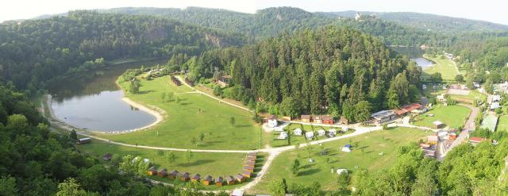
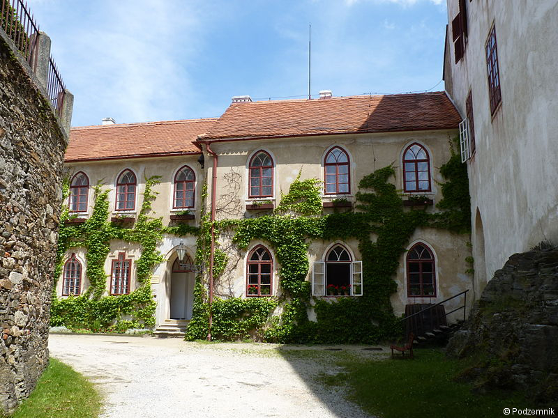
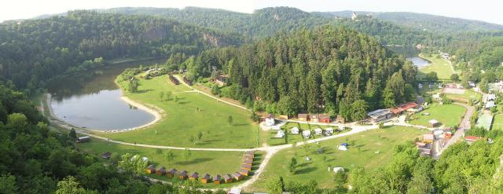
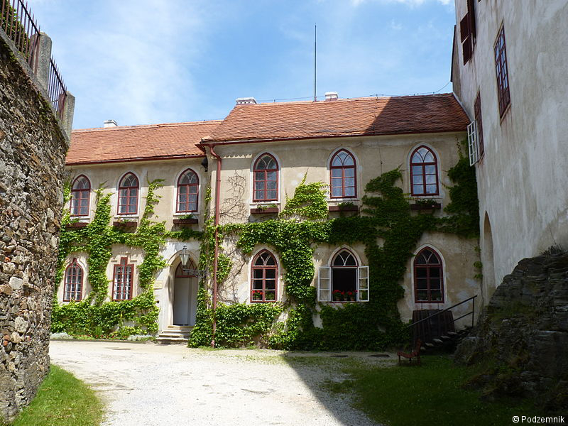

O mně
Jsem organizačně velmi zdatný člověk, který rád vymýšlí a plánuje různé aktivity. Jedna z mých oblíbených věcí je plánování výletů, které se snažím vymyslet tak, aby všem účastníkům vyhovovaly.

Jsem organizačně velmi zdatný člověk, který rád vymýšlí a plánuje různé aktivity. Jedna z mých oblíbených věcí je plánování výletů, které se snažím vymyslet tak, aby všem účastníkům vyhovovaly.
Bukovanský mlýn je historická památka v centru moravského Slovácka. V posledních letech se areál rozrostl a stal se z něho hotelový komplex, který na Vás, ale dýchá rustikální sílu. Mlynářské stavení nabízející různé speciality šéfkuchaře s podkrovním ubytováním a zázemí dalších čtyř samostatných budov. Já jsem navštívila komplex v průběhu července, kdy nás svlažil i letní děštík. Velmi mě okouzlila krása budov a čistota přírody a v neposlední řadě hlavně výborné jídlo. Na jídlo jsem velmi vzpomínala, bylo opravdu vynikající. Jsem máma, tak kladně hodnotím prostředí. Mlynařská stáj s výběhem koníků a oveček, malý dětský koutek v restauraci a venkovní zahrádka s hřištěm. Osobně jsem nezvládla navštívit krásný Bukovanský mlýn, který slouží jako rozhledna a novou vyhlídku u cesty českých panovníků, ale na základě doporučení mých blízkýh, určitě neváhejte. Místo je ideální pro rodinnou oslavu, firemní akci, dovolenou či víkendový pobyt. Můžete si zde objednat degustaci vín se sklepmistrem, vyjet na cyklovýlet, vykoupat se v bazénu, zahrát minigolf či jen dýchat atmosféru
Co dále doporučuji navštívit v blízkosti Bukovanský mlýn?
Když jsem před 2 lety hledala místo na rodinnou dovolenou, padl mi do oka Bítov, kde mě uchvátilo krásné ubytování. Z bývalé sýpky, která patřila k zámku se vytvořilo krásné ubytování. My si vybrali apartmán pro 6, který byl čistý, velký a kuchyň úžasně vybavená. Pokud je někdo rozmazlený jako já, uvitá myčku, pračku a velkou vanu. Ubytování předtčilo mé očekávání a ještě jsem objevila spoustu věcí, které ani na webu nebylo vidět. Součástí ubytování byl i krásný bazén se slanou vodou. Ubytování doporučuji, je na skvělém místě a určitě bych se sem ráda vrátila. Jediná nevýhoda,trošku smrděla čistička odpadních vod a slabý internet, musela jsem se naklonit z okna nebo koukat na film na parapetu okna, ale věřím, že už majitelé vyřešili lepší pokrytí. Pozitiva převládla nad negativy.
Penzion U Kozáků - Bítov 




Mezi další bonusy tohoto skvělého místa patřil hrad Bítov, kde se natáčela například krásná hudební pohádka Tajemství staré Bambitky. Ráda bych se na toto místo vrátila a více prozkoumala. Během našeho ubytování byl na zámku dvoudenní jarmark, tak tam bylo pěkně živo. Interiér jsem moc nezvládla projít, ale uchvátilo mne krásné nádvoří a menší zoologická zahrada zámku.
Státní hrad BítovDále bych vám ráda doporučila návštěvu Konopné farmy Vranč. Nachazí se přímo vedle ubytování. Je zde spoustu
výrobku z konopím, super konopný labyrint, písečná pláž pro děti s hřištěm a v neposlední řadě i něco na zub od
ryb a hermelínů k hamburgrům.
Hned vedle se také nachází Rekreační areál penzion Rumburak a krásná rozhledna
Rumburak. Je to sportovní areál, můžete si zde zahrát například tenis nebo bowling.
Co dále doporučuji navštívit v blízkosti Bítova?
My jsme si půjčili koloběžku, což byl skvělý zážitek a velmi příjemná trasa na zřícenu Hradu Cornštejn. Cestou jsme obdivovali camp Bítov a prvorepublikovou restauraci. Níže se můžete podívat na orientační ceny koloběžek.
| 1h | 4h | 1d | 2d | |
|---|---|---|---|---|
| Turistické | 200 | 300 | 400 | 600 |
| Dětské | 150 | 200 | 300 | 500 |
Pokud se ti moje stránka líbí nebo bys chtěl/a napsat další rady a doporučení, budu ráda za zprávu na můj email martinkovamartina85@gmail.com